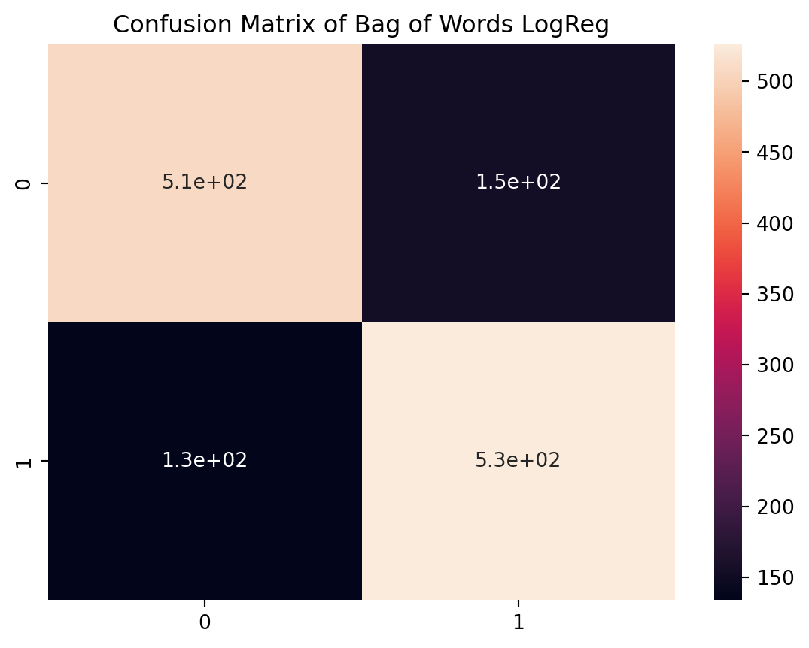

Hello Reader! I am doing sentimental analysis on Amazon reviews.
This is a Natural Language Processing, or NLP, project and requires processing text data. I decided to do my project on NLP and on Python as I felt I was too familiar with R from the classes and I wanted to learn more Python and a new field in Data Science. Also, I am using Quarto markdown, which is a multi-language markdown software for R and Python. I used Quarto because honestly, Jupyter notebook doesn’t look as good as R markdown.
Also, throughout the report, I will use a package called pickle to read and save data.
Nonetheless, I hope you get to learn something along the way!
Now let’s start with the Dataset!
Dataset Description
The dataset consists of 4 million rows of Amazon Reviews with respective labels consisting of 0: negative, and 1: positive. Because the file is too large, it’s better to download the data immediately from Hugging Face itself, as I won’t include the data in the zip file.
# #download the dataset from Hugging Face# df_train = load_dataset("amazon_polarity", split='train')# df_test = load_dataset('amazon_polarity', split='test')# # train = df_train.to_pandas()# test = df_test.to_pandas()
Converting it into one dataset. Since I frankly don’t have enough computational power, I won’t use the title column and hence, I will drop it. Honestly, the original dataframe has 4 million observations. It is like ~1GB of data. I cannot submit this, so I will reduce it to 4000 (2000 per label).
code
'''df = pd.concat([train,test]) #make to one dataframedf = df.drop('title', axis=1) #drop title since we're only using content and label'''
"\ndf = pd.concat([train,test]) #make to one dataframe\n\ndf = df.drop('title', axis=1) #drop title since we're only using content and label\n"
The dataset now consists of 4 million reviews and 2 columns (label and content).
Label distribution in the original dataset:
code
'''# set the color palette we want to use for our vizualtions# i used the color palette called "Beach House" from col = ('#fe4a49', '#2ab7ca','#fed766','#e6e6ea','#f4f4f8')fig = plt.figure(figsize=(10, 10))sns_plot = sns.countplot(x='label',data=df, palette=col).set(title='Distribution of labels in original dataset')plt.savefig("figures/df_label_distribution.png", format='png')#save the image object as a pickle filewith open('figures/pickle_data/df_label_distribution.pickle', 'wb') as f: pickle.dump(fig, f)'''#save the image object as a pickle filewithopen('figures/pickle_data/df_label_distribution.pickle', 'rb') as f: fig = pickle.load(f)plt.show()
As you can see, there is a fair distribution of labels in the original dataset.
code
# randomly sample 1000 observations from each group of labels (0 and 1)seed =19923839random.seed(seed)'''df_reduced = df.groupby('label', group_keys=False).apply(lambda x: x.sample(2000))#let's save the data to make it easier to load laterdf_reduced.to_csv('data/unprocessed/df_reduced.csv')df_reduced.to_pickle('data/unprocessed/df_reduced.pickle')'''df_reduced = pd.read_pickle('data/unprocessed/df_reduced.pickle')print('The shape of the reduced dataset is: {}'.format(df_reduced.shape))
The shape of the reduced dataset is: (4000, 2)
Now it only consists of 4000 reviews. We will only use this dataset for the rest of the project. This will help with computation later.
Missing Data:
code
print('The dataset has {} missing values.'.format(df_reduced.isna().sum().values[0]))
The dataset has 0 missing values.
That’s actually amazing. There isn’t any missing data.
code
# set the color palette we want to use for our vizualtions# i used the color palette called "Beach House" from col = ('#fe4a49', '#2ab7ca','#fed766','#e6e6ea','#f4f4f8')sns.countplot(x='label',data=df_reduced,palette=col).set(title='Distribution of labels in the reduced dataset')plt.show()
As you can see, there is a even distribution of labels in the reduced dataset!
Preprocessing
Preprocessing checklist:
Lowercase text
Strip unwanted characters from text, like punctuation and numbers
Tokenize
Lemmatize
Remove stopwords
Explanation
We want the text to be in a consistent universal form. This is why we lowercase, and remove any unwanted characters as punctuation and numbers don’t really affect sentimental values in my opinion.
Afterwards, we have to seperate the text into a list of their individual words. This is called tokenizing.
Next, if you notice, there are words like flying which has the same meaning as fly. We want to convert this to make the text in a consistent manner. There are multiple ways to do this. One way is to stem the text, which is to convert each word into their root word. So it will convert fly and flying to fli. However, this removes some meaning in the conversion. So, I will use what’s called lemmatization, where words like flying will be converted into their non-grammar word like flying to fly and lying to lie.
Finally, there are some words in the text that doesn’t really contain any meaning like ‘i’ and ‘then’. These are called stopwords. We want to remove it. There’s a lot of list of stopwords in the internet, but I will use the english stopwords from the scikitlearn package.
Let’s make a function to make this easier to apply to every row of the dataset. This will act as our recipe.
Preprocessing Function (Our recipe):
code
#let's create a function to apply to every row of the training set#this acts as a recipe we can feed into the word embedder later!def preprocess_text(s, stopwords=list(stopwords.words("english")), lem=WordNetLemmatizer()):# lowercase our text t = s.lower()''' tokenize and strip punctuation using regex tokenizing since we lower all characters before, we are only keeping letters and disregarding punctuations and number, since I think numbers won't affect sentiment. '''#tokenize and strip punct regToken = RegexpTokenizer(r'[0-9]+|\s+|[.,\/#!$%\^&\*;:{}=\-_`~()"]+', gaps=True)#tokenize t = regToken.tokenize(t)#create the stop_words list from inputted stopwords list stop_words =list(stopwords)#create an empty container t_filtered = []# for loop to only keep words not in the stopwords list# and lemmatize the wordfor i in t: i = re.sub(r"'.+","",i) t_lem = lem.lemmatize(i)if i notin stop_words: t_filtered.append(t_lem) t = t_filteredreturn t
Let’s try applying it to our dataset, and assign it into a new column called clean.
code
#using .apply() we can apply this function to every row in the content columndf_reduced['clean'] = df_reduced['content'].apply(lambda x: preprocess_text(x)) #assign it to a clean column#save our reduced dataframe to a csvdf_reduced.to_csv('data/processed/df_reduced_clean.csv')#let's save the reduced data to a pickle to load laterdf_reduced.to_pickle('data/processed/df_reduced_clean.pickle')#read the reduced dataframe as a pickledf_reduced = pd.read_pickle('data/processed/df_reduced.pickle')df_reduced.head()
label
content
clean
2167315
0
I bought this thinking it'd be sleek and decen...
[bought, thinking, sleek, decently, useful, bo...
2605225
0
I purchased 2 sets (one for me and one for the...
[purchased, set, one, one, wife, couple, week,...
768994
0
Two movies are blank....The king and I and Sou...
[two, movie, blank, king, south, pacific, blac...
1064969
0
If you're looking for a *replacement* carafe a...
[looking, replacement, carafe, already, coffee...
2157277
0
The first time I saw this I was sort of impres...
[first, time, saw, sort, impressed, know, acti...
Explanatory Data Analysis
Frequency Distribution
Let’s start with a frequency distribution. This is basically seeing which words occur the most often in the reviews. To do this we just add every token into a list and see which words comes up the most.
For this, I will use the FreqDist function from NLTK package, and take only the top 20 words
code
word_list_all = []#for every list in clean_X_train, add the values into word_listdf_reduced['clean'].apply(lambda x: word_list_all.extend(x))#keep only the top 20 most common wordsfdist_all = FreqDist(word_list_all).most_common(20)#convert to series to make it easier to plotfdist_all = pd.Series(dict(fdist_all))print('There are {} cleaned words from all the reviews'.format(len(word_list_all)))
There are 148784 cleaned words from all the reviews
As you can see, there are 148784 words in the review after cleaning. Now let’s see the graph.
code
sns.barplot(y=fdist_all.index, x=fdist_all.values, palette=col)plt.title('Top 20 words in all reviews')plt.xlabel('count')plt.ylabel('word')plt.show()
From the Frequency distribution graph, we can see the word book, one, and like comes up a lot. It doesn’t look like there’s much information, but this might provide contextual information later when we perform word embedding, so we’ll keep it.
I honestly didn’t know there are so many book reviews. But since the reviews are pulled randomly from the Amazon, this might show that there are lots of books being sold in Amazon, or that book reviewers tend to give reviews the most. Or this could also provide insight to the bias in the sampling methods of the dataset from Amazon Reviews.
Nonetheless, let’s move on to the negative reviews.
Negative reviews:
code
#create two word list 0 and 1word_list_0 = []word_list_1 = []#create a for loop, and do the same but conditioned on label value:for i in df_reduced['label'].unique():if i ==0: df_reduced.loc[df_reduced['label']==i]['clean'].apply(lambda x: word_list_0.extend(x))else: df_reduced.loc[df_reduced['label']==i]['clean'].apply(lambda x: word_list_1.extend(x))# keep only the top 20 wordsfdist_0 = FreqDist(word_list_0).most_common(20)fdist_1 = FreqDist(word_list_1).most_common(20)#convert to series to make it easier to plotfdist_0 = pd.Series(dict(fdist_0))fdist_1 = pd.Series(dict(fdist_1))print('There are {} cleaned words from all the negative reviews'.format(len(word_list_0)))print('There are {} cleaned words from all the positive reviews'.format(len(word_list_1)))
There are 77505 cleaned words from all the negative reviews
There are 71279 cleaned words from all the positive reviews
The distribution of words is a bit different because there might be some stopwords more frequent in the positive reviews that are non-existent in the negative reviews. However, this doesn’t really matter.
code
sns.barplot(y=fdist_0.index, x=fdist_0.values, palette=col)plt.title('Top 20 words in Negative reviews')plt.xlabel('count')plt.ylabel('word')plt.show()
Again, book, one, would comes up a lot. Surprisingly, good comes up on the bad reviews a lot.
Positive reviews:
code
sns.barplot(y=fdist_1.index, x=fdist_1.values, palette=col)plt.title('Top 20 words in Positive reviews')plt.xlabel('count')plt.ylabel('word')plt.show()
Now we see something different. The words ‘great’, ‘love’ comes up a lot while it doesn’t come up at all in the Negative reviews. This might be a good indicator on what constitutes as positive reviews and negative.
Bi-gram Frequency Distribution
Instead of seeing what words occur more frequent, we can see what pairs of words occur most frequent. This will show more contextual information.
code
#convert bigram FreqDist to a panda Seriesfdist_bigram = pd.Series(dict(FreqDist(list(nltk.bigrams(word_list_all))).most_common(20))).reset_index()#set index to a pair of wordsfdist_bigram = fdist_bigram.set_index(fdist_bigram['level_0'] +', '+fdist_bigram['level_1'])#drop the unneeded columnsfdist_bigram = fdist_bigram.drop(['level_0','level_1'],axis=1)sns.barplot(y=fdist_bigram.index, x=fdist_bigram.loc[:,0].values, palette=col)plt.title('Top 20 bigrams in all reviews')plt.xlabel('count')plt.ylabel('bigram')plt.show()
From this, we can see that (read, book) is most common. Interestingly, would,recommend is really common. Thus, I want to see what this looks like in the positive and negative reviews. This provides more contextual information.
Negative Reviews
code
#convert bigram FreqDist to a panda Seriesfdist_bigram_0 = pd.Series(dict(FreqDist(list(nltk.bigrams(word_list_0))).most_common(20))).reset_index()#set index to a pair of wordsfdist_bigram_0 = fdist_bigram_0.set_index(fdist_bigram_0['level_0'] +', '+fdist_bigram_0['level_1'])#drop the unneeded columnsfdist_bigram_0 = fdist_bigram_0.drop(['level_0','level_1'],axis=1)sns.barplot(y=fdist_bigram_0.index, x=fdist_bigram_0.loc[:,0].values, palette=col)plt.title('Top 20 bigrams in Negative reviews')plt.xlabel('count')plt.ylabel('bigram')plt.show()
Okay, this is quite funny. (Waste, Money) is the most common indicator. This is actually funny, and interesting. This shows that money is a big indicator for negative reviews.
Interestingly enough, (much, better) and (would, recommend) is also really high. My guess is that people would recommend something much better.
Positive Reviews
code
#convert bigram FreqDist to a panda Seriesfdist_bigram_1 = pd.Series(dict(FreqDist(list(nltk.bigrams(word_list_1))).most_common(20))).reset_index()#set index to a pair of wordsfdist_bigram_1 = fdist_bigram_1.set_index(fdist_bigram_1['level_0'] +', '+fdist_bigram_1['level_1'])#drop the unneeded columnsfdist_bigram_1 = fdist_bigram_1.drop(['level_0','level_1'],axis=1)sns.barplot(y=fdist_bigram_1.index, x=fdist_bigram_1.loc[:,0].values, palette=col)plt.title('Top 20 bigrams in Positive reviews')plt.xlabel('count')plt.ylabel('bigram')plt.show()
(Highly, recommend) and (would, recommend) is really common in the positive reviews. This might mean that reviewers would say that they highly recommend the books in the positive reviews.
Though, (would, recommend) is quite common for both sentiment reviews. I believe this is because the phrase (would, recommend) can be used to recommend an alternative (negative reviews) and to recommend the current item (positive reviews). Thus, this showcases the importance of context in text. This will be used for future techniques for word processing called Word Embedding that we will explore later in the report.
I hope that by plotting bigrams frequency distributions that you can see how context of a word matters. In fact, you can also try plotting Trigrams frequency distributions, but I won’t plot it here.
Another EDA people like to do is Wordclouds:
Wordcloud
Wordclouds are those cool looking images that see which words are most frequent words like the Frequency Distribution plots before but generally more visually appealing. Honestly, it doesn’t add more information or understanding to our data but it just looks cool. Let’s make a couple, few simple wordcloud and one funner wordlcloud.
Simple Wordcloud:
We will be using the WordCloud package for this.
Wordcloud of one review:
code
review_one = df_reduced['content'].iloc[0]print('The review that we are going to make as wordcloud is: \n{}'.format(review_one))
The review that we are going to make as wordcloud is:
I bought this thinking it'd be sleek and decently useful. And, I bought this for my 15" MacBook Pro.But I regret my decision, to have bought this, without checking out at the local store.Problem is while the inner sides of the bag has small-baloon like cushion, the bottom of the bag just doesn't have anything. Its just one thin layer of neoprene.When the laptop is placed hard, it takes full beating.
code
#make one wordcloud with the first review in our contentone_review_wc = WordCloud(background_color="white").generate(review_one)#plot itplt.imshow(one_review_wc,interpolation='bilinear')plt.title('Wordcloud of a single review')plt.axis("off")plt.show()
As you can see the wordcloud’s font size is affected by the frequency of the words. Now let’s try for the whole dataframe.
Wordcloud of entire dataset:
code
# get all the words from word_list_all into one long string seperated by whitespacetext_all =" ".join(word for word in word_list_all)wordcloud_all = WordCloud(background_color="white").generate(text_all)#plot itplt.imshow(wordcloud_all,interpolation='bilinear')plt.title('Wordcloud of all reviews')plt.axis("off")plt.show()
See it basically shows the same information as the frequency distribution.
Wordcloud of negative dataset:
code
# get all the words from word_list_all into one long string seperated by whitespacetext_0 =" ".join(word for word in word_list_0)wordcloud_0 = WordCloud(background_color="white").generate(text_0)#plot itplt.imshow(wordcloud_0,interpolation='bilinear')plt.title('Wordcloud of negative reviews')plt.axis("off")plt.show()
As you can see, it’s the same information as the frequency distribution before. Book is still the most common.
Wordcloud of positive dataset:
code
# get all the words from word_list_all into one long string seperated by whitespacetext_1 =" ".join(word for word in word_list_1)wordcloud_1 = WordCloud(background_color="white").generate(text_1)#plot itplt.imshow(wordcloud_1,interpolation='bilinear')plt.title('Wordcloud of positive reviews')plt.axis("off")plt.show()
As you can see, it’s the same information as the frequency distribution before. Great and good and love are still the most common.
Now we have seen what a simple WordCloud looks like, let’s make a fun one.
Amazon Wordcloud:
code
#I have done this code, so I'll load up the image directly to make it faster to render to HTML'''#tutorial followed from datacamp: https://www.datacamp.com/tutorial/wordcloud-python#load up the image as an arrayamazon_mask = np.array(Image.open('figures/amazon_logo.png'))#currently, all white pixels in amazon_mask is labelled as 0#for wordcloud, we need it to be 255 not 0, #transform functiondef transform_format(val): if val == 0: return 255 else: return val# quite inefficient but it worksfor i in range(len(amazon_mask)): for j in range(len(amazon_mask[i])): amazon_mask[i][j] = list(map(transform_format, amazon_mask[i][j]))wordcloud_amazon = WordCloud(background_color="white", max_words=1000, mask=amazon_mask,contour_width=2, contour_color='black').generate(text_all)# create coloring from imageamazon_colors = ImageColorGenerator(amazon_mask)#plot itfig = plt.figure(figsize=[7,7])plt.imshow(wordcloud_amazon.recolor(color_func=amazon_colors), interpolation="bilinear")plt.axis("off")#save the figure into a fileplt.savefig("figures/wordcloud/amazon_wc.png", format="png")#save the image object as a pickle filewith open('figures/pickle_data/amazon_wordcloud.pickle', 'wb') as f: pickle.dump(fig, f)'''#load the image object as a pickle filewithopen('figures/pickle_data/amazon_wordcloud.pickle', 'rb') as f: fig = pickle.load(f)plt.show()
It looks good! Though, the color of the smile is off, but it’s fine. Our code works!
There will be more graphs later, but for now, let’s move on to my favorite part: Word Embedding!
But before that, we have to train and test split.
Train and Test split
We are splitting the train and test split right now to avoid any data leakage when we eventually get to our word embeddings part. I don’t want the BoW, TFDIF, Word2Vec model to learn from the testing set, which it will do if I don’t split now. So let’s split our data.
code
X = df_reduced['content']y = df_reduced['label']#split to train and test set with stratifying on the labelX_train, X_test, y_train, y_test = train_test_split( X, y, test_size=0.33, random_state=seed, stratify=y)print('The shape of X_train:', X_train.shape)print('The shape of y_train:', y_train.shape)
The shape of X_train: (2680,)
The shape of y_train: (2680,)
To check the distribution of labels in our training and testing set, let’s check it right now.
code
sns.barplot(x=y_train.value_counts().index, y=y_train.value_counts().values, palette=col)plt.title('Distribution of label in training set')plt.show()
code
sns.barplot(x=y_test.value_counts().index, y=y_test.value_counts().values, palette=col)plt.title('Distribution of label in testing set')plt.show()
Great! Our labels are distributed evenly! Now let’s move onto my favorite part: Text Embedding!
Feature Extraction
Before feeding the text to the model, we have to extract some features or information from the text. To do this, we transform the text into certain quantifiable data that captures semantic, contextual, or/and other information regarding the data.
Word Embedding
Word embedding captures important information about a sentence or text and quantifies it to numerical values to be fed into the model. In fact, word embedding plays a important role in a model’s performance. Without word embedding, we can’t really feed the text into the model and give semantic/contextual information to the model.
Types of Word Embedding: 1. Bag of Words 2. TF-IDF 3. Word2Vec 4. gloVe 5. BERT
For this project we will use BoW, TF-IDF, and Word2Vec. Then we will compare each method and see respective model’s performances. For BoW and TF-IDF, we will use sci-kitlearn and for Word2Vec we will use the gensim package.
Bag of Words (count vectorizer)
Bag of words embedding is the most rudimentary and simplest word embedding technique! It simply counts how many times each word and assigns the word’s count to the word. Thus, it’s also called count vectorizer! For example: “Apples are apples” = {‘Apples’: 2, ‘are’: 1}.
Now let’s apply it to the data!
code
'''#use our pre-processing function as the tokenizer: this acts as a recipe#create an instance of the countvectorizercv = CountVectorizer(tokenizer=preprocess_text) #fit our data to the vectorizercv.fit(X_train)#save our fitted modelwith open('models/cv.pickle', 'wb') as f: pickle.dump(cv, f)'''#load our fitted modelwithopen('models/cv.pickle', 'rb') as f: cv = pickle.load(f)#transform our training set to the countvectorizerX_train_bow = cv.transform(X_train)print('The shape of the Bag of Words transformed training set is: {}'.format(X_train_bow.shape))
The shape of the Bag of Words transformed training set is: (2680, 14446)
We will have to do this to the testing set later, so let’s make a custom function to make it easier to do it later.
We can see that it’s basically, the word and its respective counts.
As you can see above, it creates a vocab list and its respective frequency. Pros: 1. Computationally fast 2. Easy to interpret
Cons: 1. Not flexible to new data as vocab list increases 2. Doesn’t contain any information on order of words and or grammar of sentences
TF-IDF helps with alleviating BoW problems by providing a bit more contextual information. Now let’s try TF-IDF!
TF-IDF (Term Frequency - Inverse Document Frequency)
The TF-IDF method assigns a score (the TF-IDF score) which gives more importance to rarer words in the text relative to how often it appears in the entire corpus (the entire dataset in this case). This helps give more importance to rarer words like technical jargon, and less importance to common words like and, then, would.
The method achieves this by how it calculates:
Term Frequency:
Inverse Document Frequency :
Term Frequency - Inverse Document Frequency:
While Term frequency calculates how often a word appears in the document, the Inverse document frequency calculcates the rarity of the word. This gives a more nuanced score to each term instead of just counting.
Formula pulled from https://www.learndatasci.com/glossary/tf-idf-term-frequency-inverse-document-frequency/
Now let’s apply it using sci-kit-learn!
code
'''#use our function as the recipe and create an instance of tfdiftfidf = TfidfVectorizer(tokenizer=preprocess_text)#fit our data to the vectorizertfidf.fit(X_train)#save our fitted modelwith open('models/tfidf.pickle', 'wb') as f: pickle.dump(tfidf, f)'''#load our fitted modelwithopen('models/tfidf.pickle', 'rb') as f: tfidf = pickle.load(f)#transform itX_train_tfidf = tfidf.fit_transform(X_train)print('The shape of the TF-IDF transformed training set is: {}'.format(X_train_tfidf.shape))
The shape of the TF-IDF transformed training set is: (2680, 14446)
We succeeded it’s the same shape as countVectorizer.
Now let’s try Word2Vec.
Word2Vec
Word2Vec was developed by Tomas Mikolov and other researchers at Google in 2013. Instead of calculating term frequency, it uses a neural network that takes a word and its surrounding words in the corpus, and compute a cosine-sine similarity score with the word and its surrounding words. To my understanding, all it is doing computing a score to each word that quantifies how similar one word is to another word, and it does this by looking at what words a word is usually with, what position the word is at in the sentence, and other things.
From this, words that have similar scores will be semantically similar while words that have different scores are semantically different. This tries to captures the semantic and contextual information of a word.
Architecture
Figure 1: Word2Vec Architecture
Word2Vec is essentially a 2 layer neural network.
There are two varieties of Word2Vec: CBoW (continous bag of words) and Skip-gram. CBoW and Skip-gram are essentially opposites.
CBoW takes a word’s adjacent words as inputs and uses this to predict the current word, while Skip-gram takes the current word as input and predicts its surrounding. Though both are achieving the same thing, CBoW is generally faster and makes better representations of a word, while skip-gram is able to represent rarer words better.
Now let’s apply to our data! We will use the gensim package for this. > Image from the Google published document on Word2Vec: https://arxiv.org/pdf/1301.3781.pdf
code
#let's pre-process our data first as the package won't process it first for usX_train_clean = X_train.apply(lambda x: preprocess_text(x))'''Let's create an instance of the Word2Vec model on our clean X_train.The parameter min_count specifies how frequent a word must be to be used to train the model.'''wv_mod = word2vec.Word2Vec(X_train_clean, min_count=25,vector_size=200)
Now we created a vector of size 200 for every word. Let’s see what it looks like for the word ‘book’:
As you can see, the word book is assigned a vector space with 200 dimensions.
What does this mean? To explain further, I will vizualize the data. I learned a dimension reduction technique before called t-SNE. t-SNE is a dimension reduction technique for vizualizing high dimension data by mapping each datapoint in the high dimensional space into a 2-dimensional space!
More Vizualizations: t-SNE (t-distributed Stochastic Neighbor Embedding)
I won’t go into detail but t-SNE works by calculating the conditional probability that one datapoint will be a neighbor with another datapoint by producing a Gaussian probability distribution with variance calculated by a value called perplexity. Then, it scatters these datapoints into a 2 or 3 dimensional space and creates a t-student distribution on each of the datapoint. Next, using gradient descent, it minimzes the difference between the gaussian and t-student probability distribution by minimizing a metric called Kullback-Leiber divergence. Doing this, every datapoint will be mapped into a lower dimensional space.
You can read the original paper or a medium article on the topic:
#let's create a list of unique wordswords_list = wv_mod.wv.index_to_key#get each word vectors into a listword_vectors = []for word in words_list: word_vectors.append(wv_mod.wv[word])print('The word is: {}.'.format(words_list[5]))print('And its respective word vector is: \n{}'.format(word_vectors[5]))
We can see what the word ‘time’ and its respective word vector.
Let’s apply t-SNE to our word2vec word vectors and map it to a 2 dimensional space!
code
#create an instance of T-SNE# n_components is the dimensions of the lower dimension space# perplexity is proportionally how many neighbors one datapoint will havetsne_mod = TSNE(n_components=2, perplexity=40, n_iter=1000,init='random',learning_rate=200,random_state=seed)#fit and transform tsne on every word vectorwv_mod_tsne = tsne_mod.fit_transform(word_vectors)# make the dataframe consisting of the word, and its respective tsne x and y valuestsne_df = pd.DataFrame(list(zip(words_list,wv_mod_tsne[:,0],wv_mod_tsne[:,1])), columns=['word','tsne_x','tsne_y'])print(tsne_df.head())print('The shape of the t-SNE dataframe is: {}'.format(tsne_df.shape))
word tsne_x tsne_y
0 book -12.925924 11.967720
1 one -15.378646 4.284742
2 like -14.341532 8.487006
3 good -14.272281 2.986966
4 would -19.055538 8.123889
The shape of the t-SNE dataframe is: (727, 3)
As you can see, with t-SNE we can get x and y coordinates for each word. Now let’s plot it!
code
# I have ran it before, and it will take a while'''#plotting code from https://www.kaggle.com/code/jeffd23/visualizing-word-vectors-with-t-sne/notebookfig = plt.figure(figsize=(16, 16))for i in range(len(tsne_df['word'])): plt.scatter(x=tsne_df['tsne_x'][i],y=tsne_df['tsne_y'][i], alpha=1) plt.annotate(tsne_df['word'][i], xy=(tsne_df['tsne_x'][i], tsne_df['tsne_y'][i]), xytext=(5, 2), textcoords='offset points', ha='right', va='bottom')plt.title('Word2Vec TSNE plot with min_count 25 and perplexity 40')#save the figure into a fileplt.savefig('figures/word2vec/tsne_25_40.png', format="png")#save the image object as a pickle filewith open('figures/pickle_data/tsne_25_40.pickle', 'wb') as f: pickle.dump(fig, f)'''#save the image object as a pickle filewithopen('figures/pickle_data/tsne_25_40.pickle', 'rb') as f: fig = pickle.load(f)plt.show()
It might be difficult vizualize the plot above, so let’s plot with a greater n_count to create a word2vec model that’s more selective.
The model only trains or uses words larger than min_count, so by increasing the parameter min_count, we can lessen the amount of words used.
Let’s try other min_count to vizualize! Let’s make plotting the plot into a function to make it easier to read.
Plot Function:
code
#Let's create a function to make it easier to plot the t-sne vizdef create_tsne_plot(model, filename, min_count, perplexity):#let's create a list of unique words words_list = model.wv.index_to_key#get each word vectors into a list word_vectors = []for word in words_list: word_vectors.append(model.wv[word])#create an instance of T-SNE# n_components is the dimensions of the lower dimension space# perplexity is proportionally how many neighbors tsne_mod = TSNE(n_components=2, perplexity=perplexity, n_iter=2500, random_state=seed, init='pca',learning_rate=200)#fit and transform tsne on every word vector wv_mod_tsne = tsne_mod.fit_transform(word_vectors)# make the dataframe tsne_df = pd.DataFrame(list(zip(words_list,wv_mod_tsne[:,0],wv_mod_tsne[:,1])), columns=['word','tsne_x','tsne_y'])#plotting code from https://www.kaggle.com/code/jeffd23/visualizing-word-vectors-with-t-sne/notebook fig = plt.figure(figsize=(16, 16))for i inrange(len(tsne_df['word'])): plt.scatter(tsne_df['tsne_x'][i],tsne_df['tsne_y'][i], s=50) plt.annotate(tsne_df['word'][i], xy=(tsne_df['tsne_x'][i], tsne_df['tsne_y'][i]), xytext=(5, 2), textcoords='offset points', ha='right', va='bottom') plt.title('Word2Vec TSNE plot with min_count {} and perplexity {}'.format( min_count, perplexity))#save the figure to make it easier to load savepath ='figures/word2vec/'+ filename +'.png' plt.savefig(savepath, format='png')#save the image object as a pickle file picklepath ='figures/pickle_data/'+ filename +'.pickle'withopen(picklepath, 'wb') as f: pickle.dump(fig, f) plt.show()
As you can see, the larger the min_count, the less words our Word2Vec model uses to train the model. However, this creates a clearer plot for our more common words.
Ah, there are barely any more words anymore, as only words that occurs more than 500 times will be included.
When min_count gets really large, the Word2Vec model gets really selective. This makes it not really that good for modelling as we don’t have much information. For vizualizing, min_count of 25 and 50 is really clear.
We can see that terms like month and year is very close, while it’s very far from terms like car. This shows that the Word2Vec model basically captures a word’s similarity with other words. Though, you may notice from the vizualization that some words are close together for no reason, and that’s normal as Word2Vec performs worse when our the length of our sentences, reviews in our case, are short as it doesn’t have too much contextual information.
Nonetheless, I hope from looking at these vizualizations we can see what Word2Vec captures, which is similarity between words by training on a word’s context in the corpus.
Honestly these graphs are really cool to me!
From this, let’s use min_count of 1 as the most a information.
But first we have to transform the W2V model to a format that scikitlearn can use, because it’s from different packages.
code
#Let's create an instance of a Word2Vec model trained on the processed tokenswv_mod_1 = word2vec.Word2Vec(X_train_clean, min_count=1)#Let's make the previous steps into a function to apply to the test set laterdef create_w2v_df(wv_mod):#let's create a list of unique words words_list = wv_mod.wv.index_to_key#get each word vectors into a list X_wv = []#get a list of word vectorsfor word in words_list: X_wv.append(wv_mod.wv[word])#return the np.array of the list of word vectorsreturn(np.array(X_wv))X_train_wv = create_w2v_df(wv_mod_1)print('The shape of the Word2Vec transformed training set is: {}'.format(X_train_wv.shape))
The shape of the Word2Vec transformed training set is: (14446, 100)
You may have noticed that this is the wrong shape for our dataset to feed into the model. Instead of turning each review into a combination of values, we have instead mapped each word into a 100-dimension vector space. Our resulting dataset doesn’t scores for every sentence, but scores for every word. We basically represented every word in our dataset but not represented every review.
To perform machine learning, we have to transform this dataset into a dataset with a review for each row and every column representing values for each word.
There are some ways to do this, but one way I read is to multiply each word with its tf-idf weights to produce a weighted average for word for each review. However, Another more simpler way is to use Doc2Vec.
Doc2Vec creates a vector space for every sentence instead of words, and this is handy for training as we don’t have to do extra work in using the word representation of Word2Vec to create a numerical representation of sentences. It uses the same concept as Word2Vec but keeps a unique review id for every review. I won’t go much into detail as it’s honestly complicated. But to start, we need to tag each review using the TaggedDocument package from Gensim.
To read more, there is a medium article on this: https://medium.com/wisio/a-gentle-introduction-to-doc2vec-db3e8c0cce5e
Doc2Vec
code
#tagging each row a unique identifier#code from Doc2Vec API page: https://radimrehurek.com/gensim/models/doc2vec.htmldoc_clean = [TaggedDocument(doc, [i]) for i, doc inenumerate(X_train_clean)]doc_clean[0:2]
As you can see, every review is now a list of tokens and contain a unique identifier. This is the format the Doc2Vec model needs.
Now let’s apply our Doc2Vec model to our dataset to represent our reviews.
code
'''#creating an instance of Doc2Vec (min_count = 1, vector_size=200)d2v_mod = Doc2Vec(doc_clean,vector_size=200, min_count=1, workers=8, epochs = 100, seed = seed)#save our fitted modelwith open('models/d2v.pickle', 'wb') as f: pickle.dump(d2v_mod, f)'''#load our fitted modelwithopen('models/d2v.pickle', 'rb') as f: d2v_mod = pickle.load(f)#now let's extract our vector representations from the model using .infer_vector()doc_vector = []for i inrange(len(X_train_clean)): doc_vector.append(d2v_mod.infer_vector((X_train_clean.reset_index(drop=True)[i])))#convert the list of vectors into an arrayX_train_dv = np.array(doc_vector)print('The raw shape of our training set is: {}'.format(X_train_clean.shape))print('The resulting shape of our dataframe is: {}'.format(X_train_dv.shape))
The raw shape of our training set is: (2680,)
The resulting shape of our dataframe is: (2680, 200)
It’s the same number of rows rows as our training set, Finally after all that time, we can move onto modelling!
Doc2Vec Function:
code
#Since our previous function only takes an input of a string, we now create a new one that applys to every rowdef preprocess_df(x):return x.apply(lambda x: preprocess_text(x))#Let's make a function to make this easier to do it to the datadef transform_doc2Vec(input_df, model=d2v_mod):#cleaning our text clean_text = preprocess_df(input_df)#tagging each row a unique identifier doc_clean = [TaggedDocument(doc, [i]) for i, doc inenumerate(clean_text)]#now let's extract our vector representations from the model using .infer_vector() doc_vector = []for i inrange(len(clean_text)): doc_vector.append(model.infer_vector((clean_text.reset_index(drop=True)[i])))return np.array(doc_vector)
Modelling
Let’s recap the word embedded we have:
Bag of Words (X_train_bow)
TF-IDF (X_train_tfidf)
Doc2Vec or Word2Vec (X_train_dv)
List of models I want to try for classification:
Logistic Regression w/ Penalty
Support Vector Machines
K-nearest Neighbors
Random Forest Classifier
For each model we’re going to use, let’s compare the three word embedding’s performances!
To do this, let’s create a pipeline, Sci-kit learn’s idea of a workflow in tidymodels. I could make all the models into one pipeline, but I want to compare each word embedding against each other, so I won’t do it here.
We can’t immediately use our custom pre-processing function into the pipeline. But we can create a function wrapper of it and then use that in the pipeline. To do this, we will use the Function Transformer function from sklearn.
Also, since TF-IDF is just a better Bag of Words, I will only use it on the first model: Logistic Regression.
Model Fitting with Hyperparameter tuning using GridSearchCV:
The grid search fits the models using cross validation with k=3
code
'''#fit the models on the logistic regression instancebow_lr_grid_search.fit(X_train, y_train)tfidf_lr_grid_search.fit(X_train, y_train)d2v_lr_grid_search.fit(X_train, y_train)tfidf_svm_grid_search.fit(X_train, y_train)d2v_svm_grid_search.fit(X_train, y_train)tfidf_knn_grid_search.fit(X_train, y_train)d2v_knn_grid_search.fit(X_train, y_train)tfidf_rf_grid_search.fit(X_train, y_train)d2v_rf_grid_search.fit(X_train, y_train)#Save the models to make it easier to load laterpickle.dump(bow_lr_grid_search, open('models/logreg_bow.pickle', 'wb'))pickle.dump(tfidf_lr_grid_search, open('models/logreg_tfidf.pickle', 'wb'))pickle.dump(d2v_lr_grid_search, open('models/logreg_dv.pickle', 'wb'))pickle.dump(tfidf_svm_grid_search, open('models/svm_tfidf.pickle', 'wb'))pickle.dump(d2v_svm_grid_search, open('models/svm_dv.pickle', 'wb'))pickle.dump(tfidf_knn_grid_search, open('models/knn_tfidf.pickle', 'wb'))pickle.dump(d2v_knn_grid_search, open('models/knn_dv.pickle', 'wb'))pickle.dump(tfidf_rf_grid_search, open('models/rf_tfidf.pickle', 'wb'))pickle.dump(d2v_rf_grid_search, open('models/rf_dv.pickle', 'wb'))'''#loading the modelsbow_lr_grid_search = pickle.load(open('models/logreg_bow.pickle', 'rb'))tfidf_lr_grid_search = pickle.load(open('models/logreg_tfidf.pickle', 'rb'))d2v_lr_grid_search = pickle.load(open('models/logreg_dv.pickle', 'rb'))tfidf_svm_grid_search = pickle.load(open('models/svm_tfidf.pickle', 'rb'))d2v_svm_grid_search = pickle.load(open('models/svm_dv.pickle', 'rb'))tfidf_knn_grid_search = pickle.load(open('models/knn_tfidf.pickle', 'rb'))d2v_knn_grid_search = pickle.load(open('models/knn_dv.pickle', 'rb'))tfidf_rf_grid_search = pickle.load(open('models/rf_tfidf.pickle', 'rb'))d2v_rf_grid_search = pickle.load(open('models/rf_dv.pickle', 'rb'))
The model fitting actually took 2+ hours no joke.
Logistic Regression w/ Penalty
Let’s start with Logistic Regression #### Best Model Selection using model.best_estimator_:
Bag of Words:
code
# print how our model looks after hyper-parameter tuninglr_bow = bow_lr_grid_search.best_estimator_print('The best lr_bow model is: {}'.format(bow_lr_grid_search.best_params_))
The best lr_bow model is: {'classifier__C': 0.5, 'classifier__penalty': 'l2', 'classifier__solver': 'liblinear'}
TF-IDF:
code
# print how our model looks after hyper-parameter tuninglr_tfidf = tfidf_lr_grid_search.best_estimator_print('The best lr_tfidf model is: {}'.format(tfidf_lr_grid_search.best_params_))
The best lr_tfidf model is: {'classifier__C': 1.0, 'classifier__penalty': 'l2', 'classifier__solver': 'liblinear'}
Doc2Vec:
code
# print how our model looks after hyper-parameter tuninglr_d2v = d2v_lr_grid_search.best_estimator_print('The best lr_d2v model is: {}'.format(d2v_lr_grid_search.best_params_))
The best lr_d2v model is: {'classifier__C': 0.1, 'classifier__penalty': 'l2', 'classifier__solver': 'liblinear'}
Cross Validated Metrics:
Bag of Words:
code
#specify which metrics to cross validatemetrics = ['roc_auc','accuracy']'''lr_bow_results = pd.DataFrame(cross_validate(lr_bow, X_train,y_train, scoring=metrics, cv=5))lr_bow_results.to_csv('results/lr_bow_results.csv')'''results = pd.read_csv('results/lr_bow_results.csv').iloc[:,[3,4]]Markdown(tabulate( results,headers=results.columns))
Surprisingly, the TF-IDF embedding performs the best relative to the other models in terms of both accuracy and roc_auc. Let’s move onto testing Predictions.
Predictions:
code
#Let's create predictions from the testing sety_pred_lg_bow = lr_bow.predict(X_test)y_pred_lg_tfidf = lr_tfidf.predict(X_test)y_pred_lg_dv = lr_d2v.predict(X_test)print('The accuracy score for our Bag of Words LogReg model is: {}'.format(accuracy_score(y_test, y_pred_lg_bow)*100))print('The accuracy score for our TF-IDF LogReg model is: {}'.format(accuracy_score(y_test, y_pred_lg_tfidf)*100))print('The accuracy score for our Doc2Vec LogReg model is: {}'.format(accuracy_score(y_test, y_pred_lg_dv)*100))
The accuracy score for our Bag of Words LogReg model is: 78.25757575757576
The accuracy score for our TF-IDF LogReg model is: 78.4090909090909
The accuracy score for our Doc2Vec LogReg model is: 70.45454545454545
Surprisingly, TF-IDF performs the best! I expected Doc2Vec would be best.
Confusion Matrix
Bag of Words:
code
sns.heatmap(confusion_matrix(y_test, y_pred_lg_bow), annot=True)plt.title('Confusion Matrix of Bag of Words LogReg')plt.show()

TF-IDF:
code
sns.heatmap(confusion_matrix(y_test, y_pred_lg_tfidf), annot=True)plt.title('Confusion Matrix of TF-IDF LogReg')plt.show()
Doc2Vec:
code
sns.heatmap(confusion_matrix(y_test, y_pred_lg_dv), annot=True)plt.title('Confusion Matrix of Doc2Vec LogReg')plt.show()
For logistic regression, we can see that TF-IDF is the best. It achieved the greatest training ROC_AUC and accuracy and greatest Testing accuracy.
Support Vector Machines
Since SVC has a hyperparameter C and Gamma, which affects the decision boundary. To reduce computation power, I will not fit/train a Bag of Words embedding since TF-IDF is just a more nuanced Bag of Words embedding.
To do hyperparameter tuning, we will use the GridSearchCV function from sci-kitlearn and by specifiying the hyperparameters grid, we can see which one performs the best.
Best Model Selection using model.best_estimator_:
TF-IDF:
code
# print how our model looks after hyper-parameter tuningsvm_tfidf = tfidf_svm_grid_search.best_estimator_print('The best knn_tfidf model is: {}'.format(tfidf_svm_grid_search.best_params_))
The best knn_tfidf model is: {'classifier__C': 10, 'classifier__kernel': 'rbf'}
Doc2Vec:
code
# print how our model looks after hyper-parameter tuningsvm_d2v = d2v_svm_grid_search.best_estimator_print('The best knn_d2v model is: {}'.format(d2v_svm_grid_search.best_params_))
The best knn_d2v model is: {'classifier__C': 1, 'classifier__kernel': 'rbf'}
Again, surprisingly TF-IDF performs so well on the training set. But it might be slightly overfitting.
Predictions:
code
#Let's create predictions from the testing sety_pred_svm_tfidf = svm_tfidf.predict(X_test)y_pred_svm_dv = svm_d2v.predict(X_test)print('The accuracy score for our TF-IDF SVM model is: {}'.format(accuracy_score(y_test, y_pred_svm_tfidf)*100))print('The accuracy score for our Doc2Vec SVM model is: {}'.format(accuracy_score(y_test, y_pred_svm_dv)*100))
The accuracy score for our TF-IDF SVM model is: 79.24242424242425
The accuracy score for our Doc2Vec SVM model is: 72.34848484848484
Again, TF-IDF is outperforming Doc2Vec.
Confusion Matrix
TF-IDF:
code
sns.heatmap(confusion_matrix(y_test, y_pred_svm_tfidf), annot=True)plt.title('Confusion Matrix of TF-IDF SVM')plt.show()
Doc2Vec:
code
sns.heatmap(confusion_matrix(y_test, y_pred_svm_dv), annot=True)plt.title('Confusion Matrix of Doc2Vec SVM')plt.show()
K-Nearest neighbors
K-nearest neighbors uses hyperparameter k to determine how many clusters/neighbors to use.
Best Model Selection using model.best_estimator_:
TF-IDF:
code
# print how our model looks after hyper-parameter tuningknn_tfidf = tfidf_knn_grid_search.best_estimator_print('The best knn_tfidf model is: {}'.format(tfidf_knn_grid_search.best_params_))
The best knn_tfidf model is: {'classifier__metric': 'euclidean', 'classifier__n_neighbors': 6, 'classifier__weights': 'distance'}
Doc2Vec:
code
# print how our model looks after hyper-parameter tuningknn_d2v = d2v_knn_grid_search.best_estimator_print('The best knn_d2v model is: {}'.format(d2v_knn_grid_search.best_params_))
The best knn_d2v model is: {'classifier__metric': 'euclidean', 'classifier__n_neighbors': 6, 'classifier__weights': 'uniform'}
Oh, KNN performs quite terribly on the data compared to the first two models we tried. From this, this is probably because our word embedding makes the data turn to a large number of features (great number of columns). And because of this, KNN struggles!
Predictions:
code
#Let's create predictions from the testing sety_pred_knn_tfidf = knn_tfidf.predict(X_test)y_pred_knn_dv = knn_d2v.predict(X_test)print('The accuracy score for our TF-IDF KNN model is: {}'.format(accuracy_score(y_test, y_pred_knn_tfidf)*100))print('The accuracy score for our Doc2Vec KNN model is: {}'.format(accuracy_score(y_test, y_pred_knn_dv)*100))
The accuracy score for our TF-IDF KNN model is: 62.5
The accuracy score for our Doc2Vec KNN model is: 62.272727272727266
Surprisingly, TF-IDF performs the best.
Confusion Matrix
TF-IDF:
code
sns.heatmap(confusion_matrix(y_test, y_pred_knn_tfidf), annot=True)plt.title('Confusion Matrix of TF-IDF KNN')plt.show()
Doc2Vec:
code
sns.heatmap(confusion_matrix(y_test, y_pred_knn_dv), annot=True)plt.title('Confusion Matrix of Doc2Vec KNN')plt.show()
Random Forest Classifier
Best Model Selection using model.best_estimator_:
TF-IDF:
code
# print how our model looks after hyper-parameter tuningrf_tfidf = tfidf_rf_grid_search.best_estimator_print('The best knn_tfidf model is: {}'.format(tfidf_rf_grid_search.best_params_))
The best knn_tfidf model is: {'classifier__max_depth': 6, 'classifier__min_samples_leaf': 2, 'classifier__min_samples_split': 6}
Doc2Vec:
code
# print how our model looks after hyper-parameter tuningrf_d2v = d2v_rf_grid_search.best_estimator_print('The best knn_d2v model is: {}'.format(d2v_rf_grid_search.best_params_))
The best knn_d2v model is: {'classifier__max_depth': 6, 'classifier__min_samples_leaf': 3, 'classifier__min_samples_split': 3}
Random Forest actually did slightly worse than Support Vector Machines. Still, TF-IDF performs better than the Doc2Vec model.
Predictions:
code
#Let's create predictions from the testing sety_pred_rf_tfidf = rf_tfidf.predict(X_test)y_pred_rf_dv = rf_d2v.predict(X_test)print('The accuracy score for our TF-IDF RF model is: {}'.format(accuracy_score(y_test, y_pred_rf_tfidf)*100))print('The accuracy score for our Doc2Vec RF model is: {}'.format(accuracy_score(y_test, y_pred_rf_dv)*100))
The accuracy score for our TF-IDF RF model is: 75.53030303030303
The accuracy score for our Doc2Vec RF model is: 67.95454545454545
Again, TF-IDF performed the best. And Random Forest actually did worse than Support Vector Machines.
Confusion Matrix
TF-IDF:
code
sns.heatmap(confusion_matrix(y_test, y_pred_rf_tfidf), annot=True)plt.title('Confusion Matrix of TF-IDF RF')plt.show()
Doc2Vec:
code
sns.heatmap(confusion_matrix(y_test, y_pred_rf_dv), annot=True)plt.title('Confusion Matrix of Doc2Vec RF')plt.show()
The Best Model
After seeing the model results, we can see that the best model is the TF-IDF SVM model and followed by the TF-IDF Random Forest Model. I honestly expected the Doc2Vec model to perform better as it keeps contextual and semantic information about the text better than the TF-IDF embedding but this shows that I probably need to tune the hyperparameter of the Doc2Vec model better, and I need to clean my texts better.
code
print('The two best models are: \n\nSupport Vector Machines TF-IDF with: \n{}\n\nRandom Forest TF-IDF with: \n{}'.format(tfidf_rf_grid_search.best_params_,tfidf_svm_grid_search.best_params_))print('\nThe SVM model reached a testing accuracy of {}\nThe RF model reached a testing accuracy of {}'.format(round(accuracy_score(y_test, y_pred_svm_tfidf)*100,2),round(accuracy_score(y_test, y_pred_rf_tfidf)*100,2)))print('\nThe SVM model reached a training ROC_AUC score of {}\nThe RF model reached a training ROC_AUC score of {}'.format(round(100*np.mean(pd.read_csv('results/svm_tfidf_results.csv').loc[:,'test_roc_auc']),2),round(100*np.mean(pd.read_csv('results/rf_tfidf_results.csv').loc[:,'test_roc_auc']),2)))print('\nThe SVM model reached a training accuracy score of {}\nThe RF model reached a training accuracy score of {}'.format(round(100*np.mean(pd.read_csv('results/svm_tfidf_results.csv').loc[:,'test_accuracy']),2),round(100*np.mean(pd.read_csv('results/rf_tfidf_results.csv').loc[:,'test_accuracy']),2)))
The two best models are:
Support Vector Machines TF-IDF with:
{'classifier__max_depth': 6, 'classifier__min_samples_leaf': 2, 'classifier__min_samples_split': 6}
Random Forest TF-IDF with:
{'classifier__C': 10, 'classifier__kernel': 'rbf'}
The SVM model reached a testing accuracy of 79.24
The RF model reached a testing accuracy of 75.53
The SVM model reached a training ROC_AUC score of 88.69
The RF model reached a training ROC_AUC score of 84.88
The SVM model reached a training accuracy score of 80.37
The RF model reached a training accuracy score of 76.31
The SVM TF-IDF model reached a training ROC_AUC score of 88.69%. That’s really high!
Conclusion
I hope from this project could serve as an introductory project to NLP projects.
There are lots and lots of other NLP techniques to explore like: 1. Other word embedding techniques 2. Custom stopwords 3. How to handle mispellings 4. Name entitity recognition 5. Part of speech tagging and many more!
I think I could have improved my models by handling mispellings and really removing more useless words that went through my stopwords list. Also, I could try changing the list of stopwords to use to preprocess my data as some stopwords list have more stopwords than others, like the ‘snowball’ stopwords list.
Another thing that I could have trained is to tune the hyperparameters that Doc2Vec uses, which currently I have set min_count = 200. By changing that, increasing the number of epochs (iterations to go through the dataset to train), and increasing the number of datapoints fed into the model, I could have probably produced a better and more accurate representation of the reviews in the document. However, this would add to my computational time and requires vastly more computational power which I frankly don’t have.
Nonetheless, this was fantastic opportunity to learn NLP basics and modelling in Python. Before this, I never knew about word embedding or different pipelines. If I continued with trying to model in Python, I would want to explore different ways to hyperparameter tuning like RandomSearchCV or Bayesian Optimization, which I did before.
Furthermore, I also heard that there are a lot of Neural Networks that works well with sequential data like RNN, LSTM, Gated RNN, Transformer models. Though it requires lots of computational power, it might be worth it to explore as it might have a better ability to use contextual information in predicting new texts.
Other than that, that’s all! Thank you for reading!